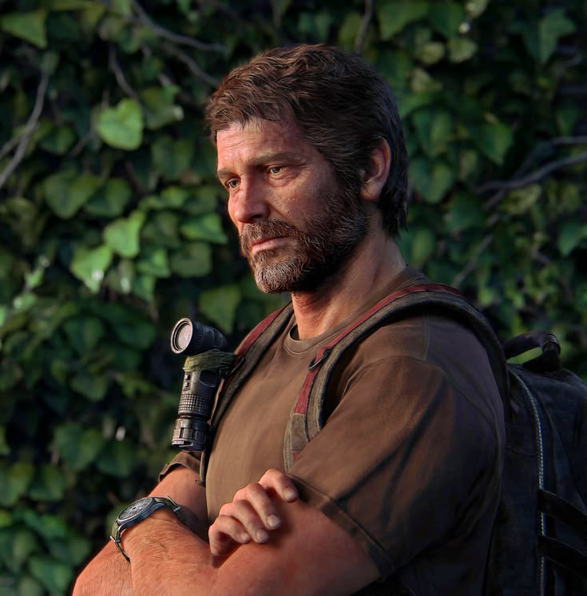
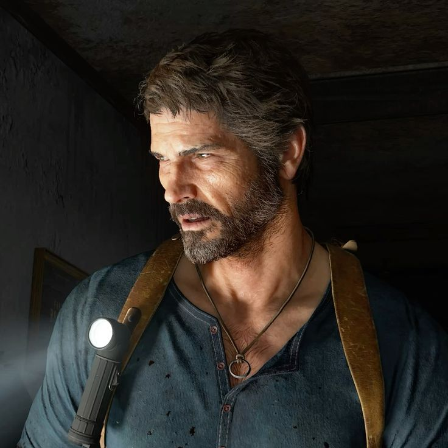
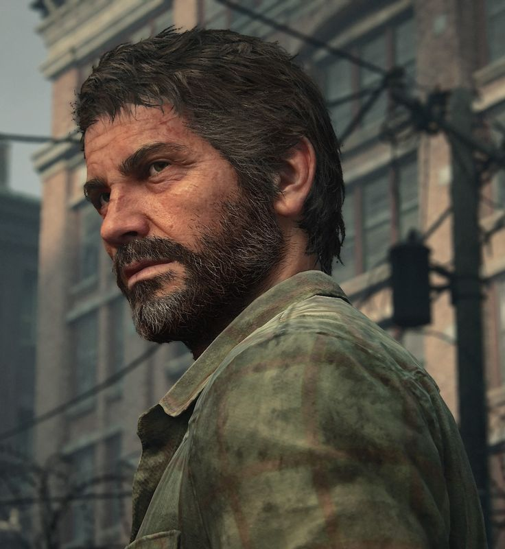
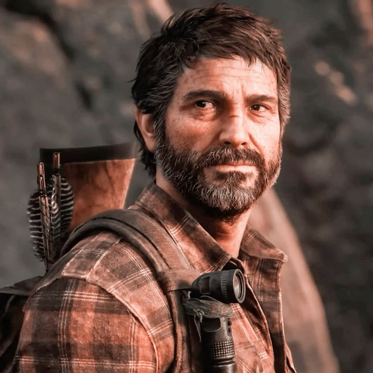

Joel Miller
Adı: Joel Miller
Mesleği: Kaçakçı ve hayatta kalan
Doğum yılı: Yaklaşık 1981
Durumu: Öldü
Ölüm: The Last of Us Part II
Fotoğraf Galerisi




Joel'in Hikâyesi
Uyarı: Bu biyografi The Last of Us Part I ve Part II oyunlarının tamamı için spoiler içerir.
Salgın Öncesi Hayatı
Joel Miller, Teksas'ta büyümüş, kızı Sarah'ı tek başına yetiştiren bir babadır. Salgın öncesinde çalışarak ailesine bakar ve gitar çalmayı sever. Sarah ile kurduğu sevgi dolu ilişki, onun karakterinin en önemli parçasıdır.
Sarah'nın Kaybı
Cordyceps salgını başladığında Joel, Sarah ve kardeşi Tommy ile birlikte kaçmaya çalışır. Kaos sırasında bir asker onlara ateş açar ve Sarah ölümcül şekilde yaralanır. Joel, kızını kollarında kaybeder. Bu olay onun hayatını sonsuza dek değiştirir; yıllar boyunca duygusal bağlardan kaçınan, sert ve kuşkucu bir hayatta kalana dönüşür.
Salgından Sonraki Yıllar
Salgından sonraki yirmi yıl boyunca Joel, hayatta kalabilmek için karanlık işlere karışır ve Boston'da kaçakçılık yapar. Tess ile birlikte çalışır ve karantina bölgesinin tehlikeli düzeninde yaşamını sürdürür. Geçmişte neler yaptığına ilişkin tüm ayrıntılar bilinmese de Joel, hayatta kalmak uğruna ağır bedeller ödediğini kabul eder.
Ellie ile Tanışması
Joel'in hayatı, Ellie Williams'ı Boston'dan çıkarmakla görevlendirilmesi üzerine değişmeye başlar. Ellie'nin Cordyceps'e karşı bağışıklığı bulunduğu anlaşılınca yolculuk insanlık için önemli bir göreve dönüşür. Joel başlangıçta Ellie'ye mesafeli yaklaşır; fakat yolculuk boyunca yaşadıkları tehlikeler ve kayıplar onları birbirine yakınlaştırır.
Bir Baba-Kız Bağı
Tess'in ölümü, Henry ve Sam'in trajedisi ve Ellie'nin David'in grubundan kurtulması, Joel'in Ellie'ye duyduğu bağlılığı güçlendirir. Joel ağır yaralandığında Ellie onu hayatta tutmak için mücadele eder. Zamanla Joel, Ellie'yi kendi kızı gibi görmeye başlar. Ellie de Joel'i ailesi olarak benimser.
Ateşböcekleri Hastanesi
Salt Lake City'de Ateşböcekleri, Ellie'nin bağışıklığını inceleyerek bir tedavi geliştirmeyi umar. Planlanan ameliyat Ellie'nin ölümüne neden olabileceği için Joel hastaneye saldırır ve onu kurtarır. Ardından Ellie'ye tedavi geliştirme çalışmalarının başarısız olduğunu söyleyerek gerçeği saklar.
Joel'in kararı, Ellie'ye duyduğu sevginin yanı sıra kendi kayıp korkusunu da yansıtır. Ancak Ellie'nin hayatı hakkında kendi başına karar verme hakkı ve insanlığın tedavi bulma ihtimali açısından ağır sonuçlar doğurabilecek bir seçimdir.
Jackson'daki Yeni Hayatı
Joel ve Ellie, Tommy'nin yaşadığı Jackson yerleşimine yerleşir. Joel burada daha sakin bir yaşam kurar ve Ellie'ye gitar çalmayı öğretir. Onu doğum gününde terk edilmiş bir müzeye götürmesi, aralarındaki sevgi dolu ilişkinin önemli anlarından biridir.
Ellie, Joel'in hastanede yaşananlarla ilgili yalanını öğrendiğinde aralarındaki güven sarsılır. Birbirlerini sevmeye devam etseler de Ellie'nin gerçeği öğrenmesi ilişkilerinde derin bir kırılma yaratır.
Abby ve Joel'in Ölümü
The Last of Us Part II'de Joel ve Tommy, devriye sırasında Abby Anderson'ı enfekte yaratıklardan kurtarır. Abby, Joel'i geçmişte babası Jerry Anderson'ı öldürdüğü için aramaktadır. Jerry, ilk oyunun sonunda Ellie üzerinde ameliyat yapmayı planlayan cerrahtır.
Abby ve grubu Joel ile Tommy'yi kendi üslerine götürür. Abby, Joel'i öldürür. Ellie olay yerine ulaştığında onu kurtaramaz. Joel'in ölümü, Ellie'nin intikam yolculuğunun başlangıcı olur.
Joel'in Mirası
Joel kusursuz bir kahraman değildir. Geçmişte yaptığı seçimler başkalarına zarar vermiştir ve Ellie'yi kurtarmak için aldığı karar da tartışmalıdır. Buna rağmen Ellie ile kurduğu ilişki, onun kayıptan sonra yeniden sevgi ve aile duygusunu keşfetmesini sağlar.
Joel'in Ellie'ye öğrettiği gitar, aralarındaki bağın simgesine dönüşür. Onun ölümü Ellie'nin hayatında derin bir boşluk bırakır ve Part II'nin ana hikâyesini şekillendirir.